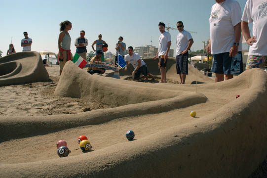

Gioco delle biglie

TRACCIA:
Si vuole sviluppare un programma per la simulazione del gioco delle biglie.
Supponiamo di avere un giocatore che gioca su di un campo di dimensione N x N. Il
giocatore (rosso in figura) in ogni istante può lanciare in una delle 8 direzioni. Nel
campo da gioco esiste una sola buca, scelta in modo casuale all’inizio del gioco, che
permette di terminare il gioco ed è nota al giocatore.
Il giocatore può incontrare diverse difficoltà durante il percorso:
- 40 buche nascoste al giocatore fanno andare la palla in un’altra posizione
scelta casualmente;
- 20 buche fanno terminare il gioco senza arrivare alla fine del gioco
Il gioco procede in questo modo:
- La posizione iniziale del giocatore è casuale ma non può corrispondere con
quella della buca;
- Ad ogni lancio viene visualizzato il campo da gioco e la posizione del
giocatore. Viene chiesto al giocatore la direzione di lancio della palla;
- La palla che va fuori va rimessa in una posizione casuale sul bordo da dove
è uscita;
- Il gioco termina o quando la palla va nella buca principale o quando si
superano 50 tiri.
Simulare 10 volte la gara ed elencare il numero di tiri effettuati in ordine crescente
(50 è il punteggio assegnato se il gioco termina inaspettatamente).
L’algoritmo usa la function rand() in stdlib per generare numeri casuali: si
ricorda che, per esempio, se numero_casuale è un int, la chiamata
numero_casuale=rand()%11; genera un numero casuale intero (distribuzione
uniforme) nell’insieme (0,1,2,3,4,5,6,7,8,9,10). Effettuare almeno 3 simulazioni.
Clicca qui per aprire il main
Clicca qui per aprire il file .c
Clicca qui per aprire il file .h
OUTPUTS:
Clicca qui per vedere gli outputs del primo test
Clicca qui per vedere gli outputs del secondo test
Clicca qui per vedere gli outputs del terzo test